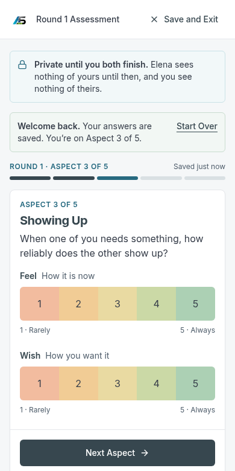

Softly Communicate
“Telling someone that something needs to change is tricky and difficult.”
Show where you'd like an Aspect to go. They see it next to their own answer, with no hard conversation needed to open it.
Use AlignSynch to uncover gaps in both understanding and expectations, in personal and business relationships. You each answer in private, then see where you agree and where you differ.
Play. Register. Invite. Give Opinions. Share. Discuss.
You set it up, they answer in private, and then you both see the whole picture at once.
Pick a template, such as Co-Founders, Partners or Brother–Sister. Each is a short set of Aspects, the topics worth checking. Rename them, add your own, and mark where you stand.
Stages 1–3 · Details, Settings, AspectsCreate your account so your work is saved. A name, an email and a password. No card.
Stage 4 · AccountSend one invite with a personal note. Your 7 free days start only when they accept.
Stage 5 · InviteYou each answer on a five-step scale, Feel and Wish, in private. Neither of you sees the other's answers until you both finish.
Stage 6 · AlignWhen you've both finished, your answers appear side by side, and each Aspect is marked In Synch, Small Gap or Gap.
Stage 6 · AlignTalk about one Aspect at a time, propose a change to its wording, and keep what you agreed with the relationship.
Stage 6 · AlignEvery Aspect has two words at its ends, like Far Short and As Wanted. You place yourself between them, twice.
How is it now, for me?
Your view of today, on a scale of 1 to 5.
How do I want it to be?
Where you'd like it to go. The difference between the two is where the conversation is.
Some topics are hard to bring up across a table. AlignSynch gives you a calm, structured way to ask, and a clear picture of the answer.
“Telling someone that something needs to change is tricky and difficult.”
Show where you'd like an Aspect to go. They see it next to their own answer, with no hard conversation needed to open it.
“Reduce stress and risk by knowing you are In-Synch.”
See the Gaps while they're small. A Small Gap today is a short chat, not a surprise later.
“Life is all about give and take.”
Two answers side by side are an easy place to begin. Start with the widest Gap and work in.
“How do you know that you really have come to a conciliation…without some record of agreement?”
Your answers, and any changes you agree on, stay with the relationship, so you both have a record.
“Do your conversations about Relationship Aspects get sidetracked?”
One Aspect at a time, with two agreed words at each end of the scale.
“The key to life is to handle the expectations of other people.”
A lot of friction comes from what each person expected. AlignSynch puts both expectations on the same scale.
Screens from AlignSynch 2.0. Both answers on every Aspect, side by side, starting with the widest Gap.


AlignSynch is for tweaking and optimizing, not for emergencies. It works on what's between two people, not on what's inside one of them.
If you're in crisis, please contact a licensed professional or your local emergency number.
Everything AlignSynch does, for one relationship. The person you invite never pays.
$9.99 / month
For one relationship.
The free week starts when they accept, not when you sign up.
No. It's a tune-up for everyday relationships, not a treatment. If something feels urgent or unsafe, please talk to a licensed professional.
No. Answers stay private until you've both finished. Then you see everything side by side, at the same time.
No. Only the person who starts the relationship pays. The person you invite joins free and never sees a price.
When the other person accepts your invite. Setting up, and waiting for them, doesn't use any of your free days.
If you haven't added a card, Stage 6 pauses. Your results and Discussion are saved and read-only. Add a card, or take one free Extra Week, to resume.
Yes. You can edit, rename or add Aspects before you invite. After that, either of you can propose a change, and the other accepts or declines it.
No. It's built for two people to work on things together, not for a company to monitor them.
Yes, from Settings. Deletion is immediate and can't be undone.